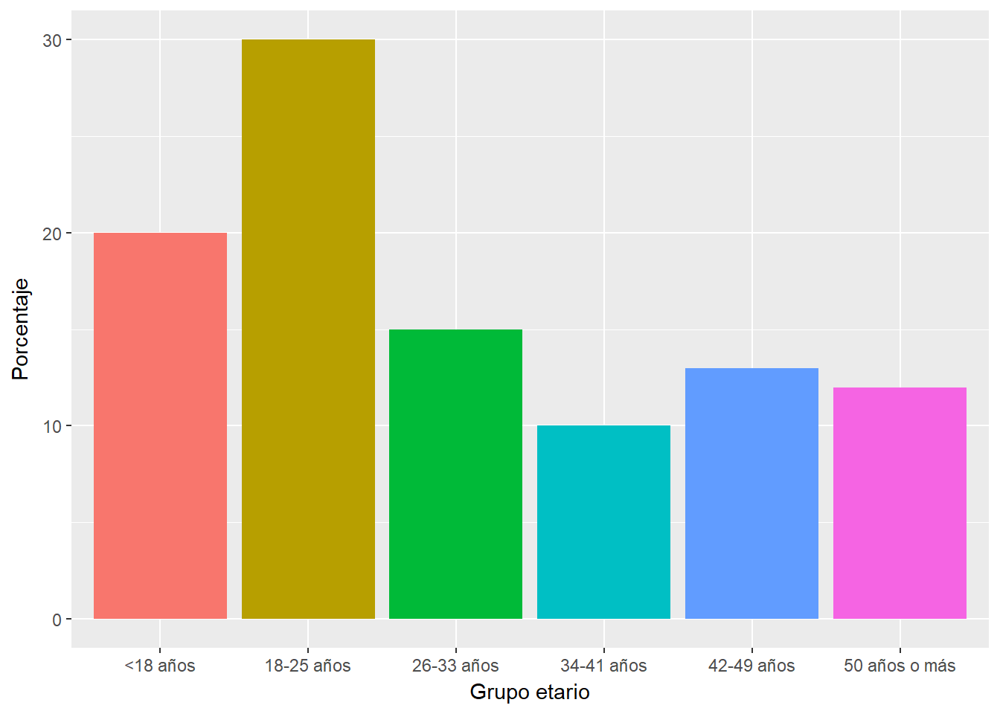
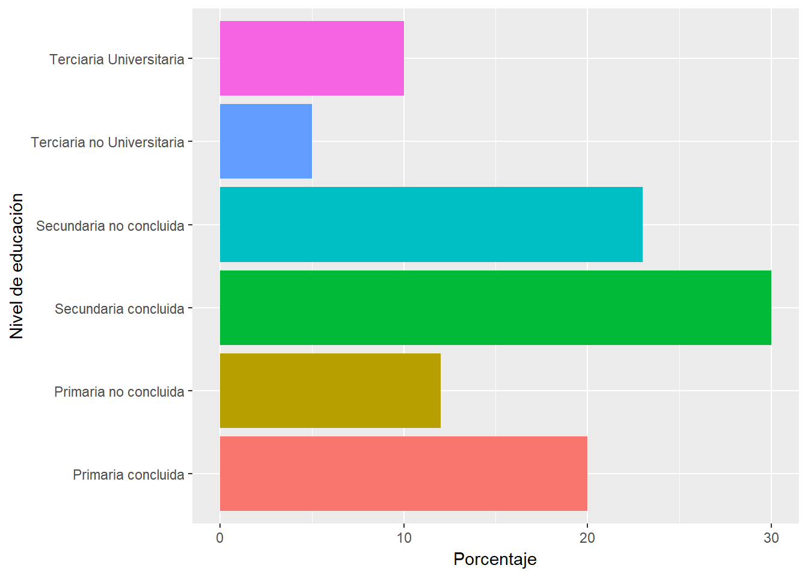
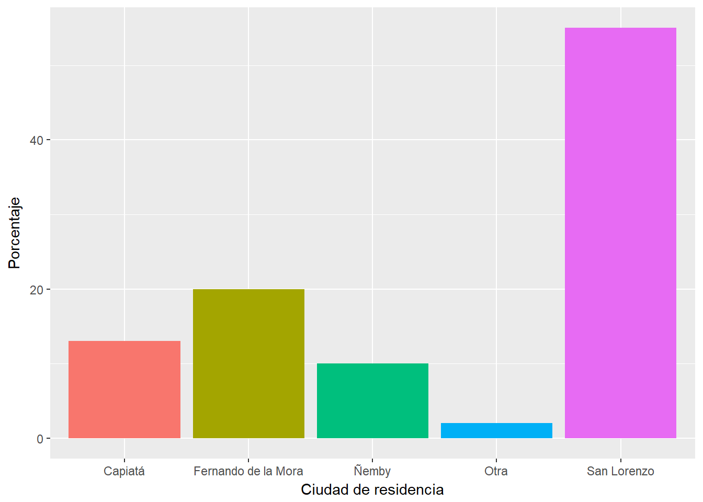
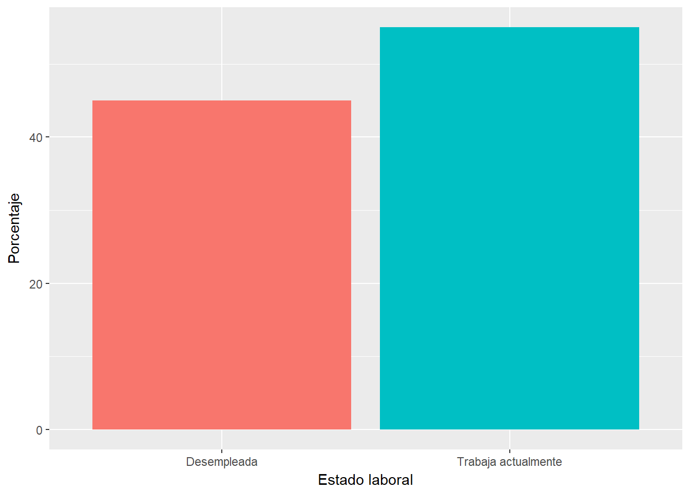
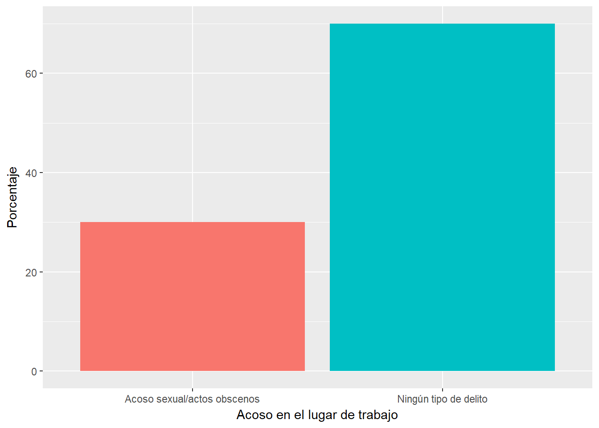
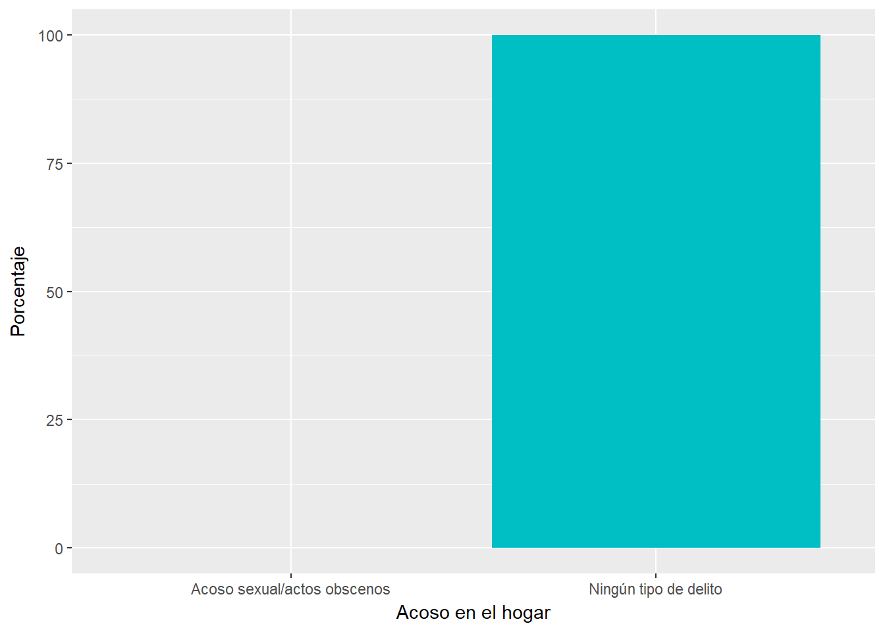
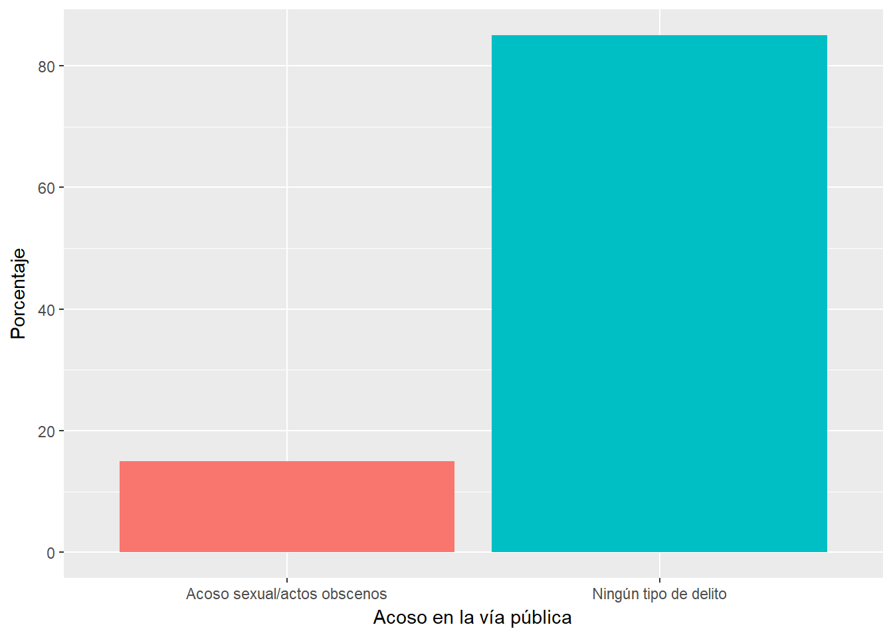
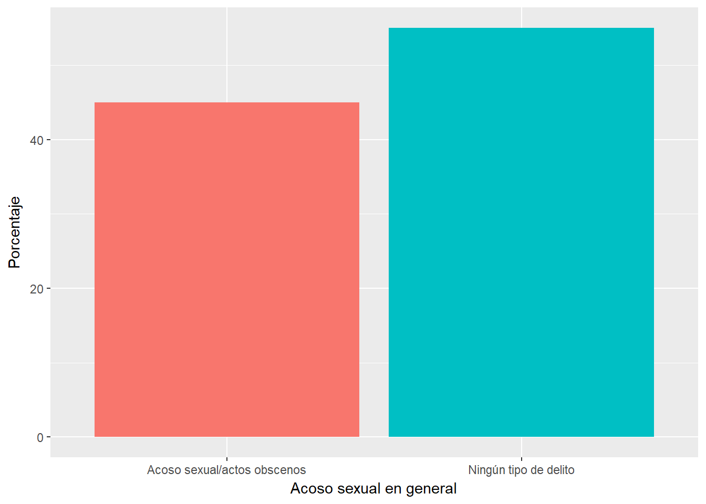
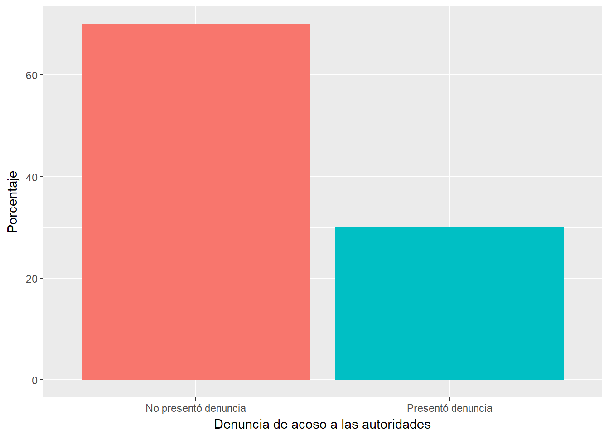

Frecuencia de delitos contra la autonomía sexual en mujeres que consultan en la Cátedra de Clínica Gineco-Obstétrica del Hospital de Clínicas de la Facultad de Ciencias Médicas de la Universidad Nacional de Asunción
Lilian Duarte Ortiz1
Resumen
En la investigación se analizó la frecuencia de delitos contra la autonomía sexual en mujeres que consultan en la Cátedra de Clínica de Gineco-Obstetricia del Hospital de Clínicas de la Facultad de Ciencias Médicas de la Universidad Nacional de Asunción. El diseño metodológico utilizado fue el observacional descriptivo, de corte transversal y prospectivo. Fueron encuestadas un total de 110 mujeres, en el periodo comprendido de febrero a marzo de 2016. Los resultados obtenidos revelan que el 45% de ellas han sido víctimas de delitos contra la autonomía sexual en algún momento de sus vidas.
Introducción
Ante el incremento de denuncias por violación sexual se nota imperiosa la necesidad de analizar la frecuencia de casos que afectan últimamente a nuestras mujeres. El tratamiento de este problema, debe ser integral y requiere de que las políticas públicas sean efectivas, reciban el apoyo de las organizaciones civiles, iglesia, municipalidades y comunidad en su conjunto, para obtener resultados efectivos.
Es necesario destacar, que respecto a la sanción que recibirán aquellas personas que violenten sexualmente a personas entre 14 y menos de 18 años de edad, se requiere hacer un análisis profundo teniendo en cuenta diversas opiniones de especialistas, ya que por un lado se castiga a los delincuentes sexuales que abusan sexualmente de menores de edad, que en muchas oportunidades han quedado impunes por el simple hecho de que los violadores afirman que hubo consentimiento, sin serlo.
Por otro lado, se restringe el derecho a su libertad sexual, si estos quisieran ejercerlo, porque se está limitando ese derecho hasta después de cumplir la mayoría de edad.Por todo lo mencionado el presente trabajo trata de analizar la problemática general de los delitos contra la autonomía sexual que nuestro Código Penal Paraguayo vigente tipifica.
Marco legal
Constitución Nacional del Paraguay
Capitulo II: De la Libertad
Artículo 9: De la libertad y la seguridad de las personas. Toda persona tiene derecho a ser protegida en su libertad y en su seguridad. Nadie está obligado a hacer lo que la ley no ordena ni privado de lo que ella no prohíbe.
Código Penal del Paraguay
Libro Segundo: Parte Especial – TITULO I: Hechos Punibles Contra la Persona
CAPITULO V: Hechos Punibles Contra la Autonomía Sexual
Artículo 128. Coacción Sexual y Violación
- El que, mediante fuerza o amenaza con peligro presente para la vida o la integridad física, coaccionara a otro a padecer en su persona actos sexuales, o a realizar tales actos en sí mismo o con terceros, será castigado con pena privativa de libertad de hasta diez años.
- Cuando la víctima haya sido violada, coaccionándosela al coito con el autor o con terceros, la pena privativa de libertad será de tres a doce años.
- Cuando la víctima del coito haya sido una persona menor de dieciocho años de edad, la pena privativa de libertad será de tres a quince años.
- La pena podrá ser atenuada con arreglo al artículo 67 cuando de la relación de la víctima con el auto, surgieren considerables circunstancias que lo ameriten.
- A los efectos de esta ley se entenderán como:
- Actos sexuales, aquellos destinados a excitar o satisfacer los impulsos de la libido, siempre que respecto a los bienes jurídicos protegidos, la autonomía sexual y el desarrollo sexual armónico de niños y adolescentes, sean manifiestamente relevantes;
- Actos sexuales realizados ante otro, aquellos en el sentido del numeral anterior que el otro percibiera a través de sus sentidos.
Artículo 129. Trata de Personas
- El que mediante fuerza, amenaza de mal considerable o engaño, condujera a otra persona, fuera del territorio nacional o la introdujera en el mismo y, utilizando su indefensión la indujera a la prostitución, será castigado con pena privativa de libertad de hasta seis años.
- Cuando el autor actuara comercialmente o como miembro de una banda que se ha formado para la realización de hechos señalados en el inciso anterior, se aplicara lo dispuesto en los artículos 57 y 91.
Articulo 129 a. Rufianería. El que explotara a una persona que ejerce la prostitución, aprovechándose de las ganancias de ella, será castigado con pena privativa de libertad de hasta cinco años.
Articulo 129 b. Trata de personas con fines de su explotación sexual.
- El que, valiéndose de una situación de constreñimiento o vulnerabilidad de otro por encontrarse en un país extranjero, le induzca o coaccione al ejercicio a la continuación del ejercicio de la prostitución o la realización de actos sexuales en si, con otro o ante otro, con fines de explotación sexual, será castigado con pena privativa de libertad de hasta ocho años. Con la misma pena será castigado el que induzca a otra persona menor de dieciocho años al ejercicio o a la continuación del ejercicio de la prostitución o a la realización de los actos señalados en el párrafo 1.
- Con pena privativa de libertad de hasta doce años será castigado el que mediante fuerza, amenaza con un mal considerable o engaño:
- Induzca a otro al ejercicio o la continuación del ejercicio de la prostitución o a la realización de actos sexuales señalados en el inciso 1, párrafo 2;
- Captara a otro con la intención de inducirle al ejercicio o la continuación del ejercicio de la prostitución o a la realización de actos sexuales señalados en el inciso 1, párrafo 2.
- La misma pena se aplicara, cuando la víctima sea:
- Una persona menor de catorce años; o
- Expuesta, al realizarse el hecho, a maltratos físicos graves o un peligro para su vida.
- Con la misma pena será castigado el que actuara comercialmente o como miembro de una banda que se ha formado para la realización de hechos señalados en los incisos anteriores, fin este caso se aplicara también lo dispuesto en los artículos 57 y 94. El consentimiento dado por la victima a toda forma de explotación no se tendrá en cuenta cuando se haya recurrido a cualquiera de los medios enunciados en este artículo.
Articulo 129 c. Trata de personas con fines de su explotación personal y laboral.
- El que, valiéndose de la situación de constreñimiento o vulnerabilidad de otro por encontrarse en un país extranjero, le someta a esclavitud, servidumbre, trabajos forzados o condiciones análogas o le haga realizar o seguir realizando trabajos en condiciones desproporcionadamente inferiores a las de otras personas que realizan trabajos idénticos o similares, será castigado con pena privativa de libertad de hasta ocho años. Con la misma pena será castigado el que someta a un menor de dieciocho años a esclavitud, servidumbre, trabajos forzados o condiciones análogas o a la realización o la continuación de trabajos señalados en el párrafo 1.
- Con pena privativa de libertad de hasta doce años será castigado el que mediante fuerza, amenaza con un mal considerable o engaño:
- Someta a otro a esclavitud, servidumbre, trabajos forzados o condiciones análogas o le haga realizar o continuar realizando trabajos señalados en el inciso 1, párrafo 1;
- Captara a otro con la intención de someterle a esclavitud, servidumbre, trabajos forzados o condiciones análogas o le haga realizar o continuar realizando trabajos señalados en el inciso 1, párrafo 1;
- Captara a otro con la intención de facilitar la extracción no consentida de sus órganos. 3.- Se aplicara también lo dispuesto en el artículo 129 b, incisos 3 y 4. El consentimiento dado por la victima a toda forma de explotación no se tendrá en cuenta cuando se haya recurrido a cualquiera de los medios enunciados en este artículo.
Artículo 130. Abuso sexual en personas indefensas
- El que realizara actos sexuales en otra persona que se encontrase en estado de inconsciencia o que, por cualquier otra razón, estuviese incapacitada para ofrecer resistencia, será castigado con pena privativa de libertad de hasta tres años. Será castigado también la tentativa.
- Si los actos sexuales con personas que se encontraran en las condiciones referidas en el inciso anterior comprendieran el coito, la pena privativa de libertad podrá ser aumentada hasta diez años.
- La pena podrá ser atenuada con arreglo al artículo 67 cuando, por las relaciones de la víctima con el autor, se dieran considerables circunstancias atenuantes. En este caso no se castigara la tentativa.
Artículo 131. Abuso sexual en personas internadas.
- El que en el interior de una institución cerrada o de la parte cerrada de una institución:
- Realizara actos sexuales con internados bajo su vigilancia o asesoramiento, o
- Hiciera realizar a la víctima tales actos en sí mismo o con terceros, será castigado con pena privativa de libertad de hasta tres años o con multa.
- Cuando el autor fuese un funcionario, la pena podrá ser aumentada a pena privativa de libertad de cinco años.
Artículo 132. Actos exhibicionistas.
- El que realizara actos obscenos que ofendan el pudor de las personas de manera a inquietar o agraviar de modo relevante a terceros, será castigado con pena privativa de libertad de hasta un año o con multa.
- Se podrá prescindir de la ejecución de la pena cuando el autor se sometiera a un tratamiento idóneo. Será aplicable, en lo pertinente, el artículo 49.
Artículo 133. Acoso Sexual.
- El que con fines sexuales hostigara a otra persona, abusando de la autoridad o influencia que le confiere sus funciones, será castigado con pena privativa de libertad de hasta dos años.
- En estos casos se aplicara lo dispuesto en el artículo 59.
- La persecución penal dependerá de la instancia de la víctima.
CAPITULO VI: Hechos punibles contra niños y adolescentes
Artículo 135. Abuso sexual en niños.
- El que realizara actos sexuales con un niño o lo indujera a realizarlos en sí mismo o en terceros, será castigado con pena privativa de libertad de hasta tres años o con multa. Con la misma pena será castigado el que realizara actos sexuales manifiestamente relevantes ante un niño y dirigidos a él, o lo indujera a realizarlos ante sí o ante a terceros.
- En los actos señalados en el inciso anterior la pena privativa de libertad será aumentada hasta cinco años cuando el autor:
- Al realizar el hecho haya maltratado físicamente a la víctima en forma grave;
- Haya abusado de la víctima en diversas ocasiones; o
- Haya cometido el hecho con un niño que sea su hijo biológico, adoptivo o hijastro, o con un niño cuya educación, tutela o guarda este a su cargo.
- Cuando concurran varios agravantes de los señalados en el inciso 2, el autor será castigado con pena privativa de libertad de hasta seis años.
- En los casos señalados en el inciso 1, la pena privativa de libertad será de tres a doce años cuando el autor haya realizado el coito con la víctima. En caso de que la víctima sea menor de diez años, la pena podrá aumentarse hasta quince años. 5.- Sera castigado con pena de multa el que:
- Realizara delante de un niño actos exhibicionistas aptos para perturbarle; o
- Con manifestaciones verbales obscenas o publicaciones pornográficas en los términos del artículo 14, inciso 3 se dirigiera al niño para estimularlo sexualmente o causarle rechazo respecto al sexo.
- Cuando el autor sea menor de dieciocho años se podrá prescindir de la pena.
- En los casos de los incisos 1 y 5 se podrá prescindir de la persecución penal, cuando el procedimiento penal intensificara desproporcionadamente el daño ocasionado a la víctima.
- Se entenderá por niño, a los efectos de este artículo, a la persona menor de catorce años.
Artículo 136. Abuso sexual en personas bajo tutela.
- El que realizara actos sexuales con una persona:
- No menor de catorce años ni mayor de dieciséis años, cuya educación, guarda o tutela este a su cargo.
- No menor de dieciséis años ni mayor de edad, cuya educación, guarda o tutela este a cargo del autor quien, abusando de su dependencia, lo sometiera a su voluntad;
- Que sea un hijo biológico, adoptivo o hijastro del cónyuge o concubino; o
- Que indujera al menor a realizar tales actos en el, con la misma pena será castigado el que, ante un menor y dirigido a él, realizara actos sexuales o lo indujera a realizarlos ante sí o ante terceros.
- El que se dirigiera al menor con manifestaciones verbales obscenas o publicaciones pornográficas en los términos del artículo 14, inciso 3, para estimularle sexualmente o causarle rechazo, será castigado con pena de hasta ciento ochenta días multa.
Artículo 137. Estupro.
- El hombre que por medio de la persuasión lograra realizar el coito extramarital con una mujer de catorce a dieciséis años, será castigado con pena privativa de libertad de hasta dos años o con multa.
- Cuando el autor sea menor de dieciocho años se podrá prescindir de la pena.
Artículo 138. Actos homosexuales con personas menores. El que siendo mayor de edad realizara actos sexuales con una persona del mismo sexo, de catorce a dieciséis años, será castigado con pena privativa de libertad de hasta dos años o con multa.
Artículo 139. Proxenetismo.
- Será castigado con pena privativa de libertad de hasta cinco años o multa el que indujera a la prostitución a una persona:
- Menor de dieciséis años de edad;
- Entre dieciséis años y la mayoría de edad, abusando de su desamparo, confianza o ingenuidad; o
- Entre dieciséis años y la mayoría de edad, cuya educación este a su cargo;
- Cuando el autor actuara comercialmente, el castigo será aumentado a pena privativa de libertad de hasta seis años. Se aplicara también lo dispuesto en los artículos 57 y 94.
- Cuando la víctima sea menor de catorce años, el castigo será aumentado a pena privativa de libertad de hasta ocho años.
Articulo 140. Pornografía relativa a niños y adolescentes
- El que:
- Produjere publicaciones, en el sentido del Articulo 14, inciso 3, que representen actos sexuales con participación de personas menores de dieciocho años de edad o la exhibición de sus partes genitales;
- Organizara, financiara o promocionara espectáculos, públicos o privados, en los que participe una persona menor de dieciocho años en la realización de actos sexuales; o
- Distribuyera, importara, exportara, ofertara, canjeara, exhibiera, difundiera, promocionara o financiara la producción o reproducción de publicaciones en sentido del numeral 1, será castigado con pena privativa de libertad de hasta cinco años o multa.
- El que reprodujera publicaciones según el numeral 1 del inciso 1, será castigado con pena privativa de libertad de hasta tres años o multa.
- La pena de los incisos anteriores podrá ser aumentada hasta diez años, cuando:
- Las publicaciones y espectáculos en el sentido de los incisos 1 y 2 se refieran a menores de catorce años o se de acceso a los menores de dicha edad a publicaciones y espectáculos, en sentido de los incisos citados;
- El autor tuviera la patria potestad, deber de guarda o tutela del niño o adolescente, o se le hubiere confiado la educación o cuidado del mismo;
- El autor operara en convivencia con personas a quienes competa un deber de educación, guarda o tutela respecto del niño o adolescente;
- El autor hubiere procedido, respecto del niño o adolescente con violencia, fuerza, amenaza, coacción, engaño, recompensa o promesa remuneratoria de cualquier especie; o
- El autor actuara comercialmente o como miembro de una banda dedicada a la realización reiterada de los hechos punibles señalados.
- El que obtuviera la posesión de publicaciones en el sentido de los incisos 1 y 3, será castigado con pena privativa de libertad de hasta tres años o con multa.
- Se aplicara, en lo pertinente, también lo dispuesto en los Artículos 57 y 94.
Generalidades
Delitos contra la autonomía sexual
El Ámbito Sexual y la Libertad
Norberto Bobbio, distingue entre libertad de querer o de voluntad (libertad positiva), y libertad de obrar (libertad negativa).
- La libertad de querer o voluntad, es autodeterminación, la misma que no es otra cosa que la situación en la que un sujeto tiene la posibilidad de orientar su voluntad hacia un objetivo, de tomar decisiones sin verse determinado por la voluntad de otros.
- La libertad de obrar, supone realizar u omitir el comportamiento que se tiene voluntad de efectuar o de omitir, sin que un tercero no autorizado interfiera en dicha realización u omisión.
Diez Ripolles, dice que los delitos de la libertad sexual tienen dos aspectos:
- Lo positivo, significa libre disposición de las propias capacidades y potencialidades sexuales, tanto en su comportamiento particular como en su comportamiento social; y,
- Lo negativo, se mira en un sentido defensivo y remite al derecho de toda persona a no verse involucrada sin su consentimiento en un contexto sexual.
Miguel Bajo Fernández, dice que la libertad sexual debe entenderse de dos maneras: como libre disposición del propio cuerpo, sin más limitaciones que el respeto a la libertad ajena; y como facultad de repeler .agresiones sexuales de terceros.
Caro Coria, dice que la libertad sexual debe entenderse como:
- Sentido positivo-dinámico de la libertad sexual, se concreta en la capacidad de la persona de disponer libremente de su cuerpo para efectos sexuales.
- Sentido negativo-pasivo, se concreta en capacidad de la persona de negarse a ejecutar o tolerar actos sexuales en los que no desea intervenir.
Esta división se hace con fines pedagógicos, ya que la libertad sexual en su vertiente positiva como negativa no se oponen entre sí, ambos constituyen un complemento que refleja distintos aspectos de un mismo bien jurídico.
Debemos señalar que la libertad sexual es la facultad de la persona para auto determinarse en el ámbito de su sexualidad, sin más limitaciones que el respeto a la libertad ajena, facultad que se expande hasta utilizar el propio cuerpo a voluntad, seguir en cada momento una u otra tendencia sexual, hacer y aceptar las propuestas que se prefieran, así como rechazar las no deseadas.
La Indemnidad Sexual como bien Jurídico
El bien jurídico protegido estaría definido por los conceptos de indemnidad o intangibilidad sexuales, que proceden de la doctrina italiana y reconocidos por la doctrina española a finales de los años setenta. Bramont Arias y García Cantizano manifiestan que hay comportamientos dentro de los delitos sexuales en los que no puede afirmarse que se proteja la libertad sexual, en la medida que la víctima carece de esa libertad. Se busca proteger la indemnidad o intangibilidad sexual, o sea la seguridad o desarrollo físico o psíquico normal de las personas.
Caro Coria, indemnidad o intangibilidad sexual, son las condiciones físicas y psíquicas para el ejercicio sexual en libertad, las que puede alcanzar el menor de edad, recuperar quien este afectado por una situación de incapacidad transitoria, o como ocurre con los retardados mentales, nunca lo obtendrían. Muñoz Conde, habla de protección de menores e incapacidad orientada a evitar ciertas influencias que, inciden de manera negativa en el desarrollo futuro de su personalidad en caso de los menores, sean adultos, puedan decidir su libertad sexual y en caso de los incapaces, para evitar que sean utilizados como objeto sexual por terceras personas que abusan de su situación.
La indemnidad o intangibilidad sexual es el verdadero bien jurídico que se tutela con las conductas delictivas previstas en los tipos penales. Se relaciona con la necesidad de proteger y garantizar el desarrollo normal del ámbito sexual de quienes no han logrado madurez suficiente, como es el caso de los menores y los incapacitados, por tanto el Estado debe proteger la sexualidad de las personas que por sí solas no puede defenderlo al no tener la capacidad suficiente para valorar realmente una conducta sexual.
La indemnidad sexual, se relaciona directamente con la necesidad de proteger y garantizar el desarrollo normal en el ámbito sexual de quienes aún no han alcanzado el grado de madurez suficiente para ello, como es el caso de los menores; asimismo de quienes por anomalías psíquicas, carecen de plena capacidad para llegar a tomar conciencia de lo que significa una relación sexual.
Antecedentes históricos
La violación entendida como acceso carnal ha sido contemplada por las legislaciones antiguas:
- En Roma se castigaba con la pena de muerte a quienes ejercían violencia sobre personas casadas o solteras.
- En el Código de Hammurabi de los babilónicos y caldeos se sancionaba de una manera enérgica, la agraviada, la sociedad y todos los dioses eran las víctimas. La sanción que se aplicaba al violador era pena de muerte mediante ahorcamiento en público.
- El Derecho Hebreo tenía penas más drásticas, se sancionaba con la pena de muerte al violador, así como a los familiares más cercanos.
- El Derecho Canónico también sancionaba este delito con pena de muerte, pero tenía como requisito que la víctima sea virgen y ser desflorada y ésta no reunía esas características no se consideraba como tal, sancionándose con penas más leves.
- En las Leyes Españolas, el Fuero Juzgo castigaba al hombre libre de 100 azotes y al siervo a morir quemado en fuego. El Fuero viejo de castilla determinaba la muerte de quien forzaba a una mujer virgen o no.
- Las Partidas (Tratado de Derecho Penal, Fontán Palestra Carlos, p.50) amenazaban con pena de muerte al hombre que robara a una mujer viuda de buena fama, virgen, casada o religiosa o viviere con algunas de ellas por la fuerza.
- En el Perú, los incas sancionaban al violador con expulsión del pueblo; el linchamiento, sólo se aplicaba la pena de muerte para los reincidentes.
- En la época de la Colonia la cifra negra de la criminalidad aumenta debido al abuso y flagelo de los cuales eran víctimas nuestros indígenas.
- En la época de la República, estando vigente el Código de 1924, había pena de muerte para el violador que agraviaba a menores de 7 años, siendo sustituida por la pena de internamiento. Posteriormente la Constitución de 1979 y la actual, se aplica pena de muerte en caso de traición a la patria en situación de guerra exterior.
Definición de violencia sexual
La violencia sexual se define como “el acto sexual o análogo practicado contra la voluntad de una persona que inclusive puede ser su cónyuge o conviviente, mediante la utilización de violencia física o grave amenaza que venza su resistencia. La violación puede conceptuarse como el acceso carnal obtenido o procurado mediante violencia o sin consentimiento de la víctima. Es todo acto carnal con persona de uno u otro sexo, ejecutado sin su consentimiento o en contra de su voluntad mediante violencia real o física, como por amenaza grave o intimidación presunta. Consiste en obligar a alguno a la unión carnal por medio de la violencia o amenaza.
Según el Actus Reus del crimen de violación bajo el derecho internacional está constituido por la penetración sexual sin el consentimiento de la víctima, aunque sea leve, de la vagina o el ano o cualquier objeto utilizado, o la boca de la víctima por el pene del perpetrador. El Estatuto de la Corte incorporó en la definición de violación, un término mucho más amplio que el de penetración, la “invasión” para que resultara neutro en cuanto al sexo. La definición de invasión incluye no solo la penetración de un órgano sexual, sino también cualquier tipo de abuso sexual con objetos o con partes del cuerpo.
Este concepto es clave para muchas legislaciones latinoamericanas donde todavía la violación se define como “acceso carnal”, reduciéndose a la penetración con un órgano sexual masculino. La violación requiere que el autor haya invadido el cuerpo de una persona mediante una conducta que haya ocasionado la penetración, de cualquier parte del cuerpo de la víctima o del autor con un órgano sexual o del orificio anal o vaginal de la víctima con un objeto u otra parte del cuerpo.
El concepto de invasión se utiliza en sentido amplio para que sea neutro respecto al sexo de la víctima. Además requiere que la invasión haya tenido lugar por la fuerza, o mediante la amenaza de la fuerza o mediante coacción, como la causada por el temor a la violencia, la intimidación, la detención, la opresión psicológica o el abuso de poder, contra esa u otra persona o aprovechando un entorno de coacción, o se haya realizado contra una persona incapaz de dar su consentimiento genuino. Se entiende que una persona es incapaz de dar su consentimiento genuino si adolece de incapacidad natural, inducida o debida a su edad.
El delito sexual denominado por la doctrina como violación sexual, pero la forma como se ha ampliado su contenido y formas de comisión, entonces se ha extendido y se denomina delito de acceso carnal sexual.
Protocolo de atención a personas en situación de violencia sexual
El Estado promoverá políticas que tengan por objeto evitar la violencia en el ámbito familiar y otras causas que atenten contra su solidaridad. Debe entenderse por violencia contra la mujer cualquier acción o conducta basada en su género que cause muerte, daño o sufrimiento físico, sexual o psicológico a la mujer, tanto en el ámbito público o privado. Se entenderá que violencia contra la mujer incluye la violencia, física, sexual y psicológica:
- Que tenga lugar dentro de la familia o unidad doméstica o en cualquier otra relación interpersonal, ya sea que el agresor comparta o haya compartido el domicilio que la mujer y que comprende, entre otros, violación, maltrato y abuso sexual;
- Que tenga lugar en la comunidad y sea perpetrada por cualquier persona y que comprende, entre otros, violación, abuso sexual, tortura, trata de personas, prostitución forzada, secuestro y acoso sexual en el lugar del trabajo, así como en instituciones educativas, establecimientos de salud o cualquier otro lugar, y
- Que sea perpetrada o tolerada por el Estado o sus agentes, donde quiera que ocurra.
Oblitoriedad de la denuncia
Toda persona que tenga conocimiento de una violación a los derechos y garantías del niño o adolescente, debe comunicarle inmediatamente a la Consejería Municipal por los Derechos del Niño, Niña y Adolescente (CODENI) o, en su defecto, al Ministerio Publico o al Defensor Público. El deber de denunciar incumbe en especial a las personas que en su calidad de trabajadores de la salud, educadores, o docentes o de profesionales de otra especialidad desempeñen tarea de guarda, educación o atención de niños o adolescentes.
En el Plan Nacional de Salud Sexual y Reproductiva del Ministerio de Salud Pública y Bienestar Social 2003/2008 está incluida dentro de las líneas de acción la prevención de la violencia relacionada con el sexo y su tratamiento físico y mental.
Por Resolución 964/10 del Ministerio de salud Pública y Bienestar Social se aprobó el Programa Nacional para la prevención y la atención integral de mujeres, niñas, niños y adolescentes en situación de violencia basada en género, domestica e intra familiar, 2010/2015; se dispuso la implementación y aplicación de dicho plan a través de los establecimientos de salud públicos, privados y mixtos de todo el país y se responsabilizó de la coordinación intra e interinstitucional para su cumplimiento a la Dirección General de programas de Salud en el plano nacional y a las Direcciones de Regiones Sanitarias.
Contenido del Protocolo de atención a personas en situación de violencia sexual
Se deberá ofrecer a la víctima la asistencia integral que necesita. Ante los casos de violencia sexual el profesional de la salud deberá realizar el examen médico necesario y completo y comunicar a las autoridades correspondientes (Fiscalía o Policía) a fin de cumplir de una sola vez los aspectos médicos y jurídicos evitando la victimización secundaria.
Toda persona que haya sido víctima de un hecho punible contra la autonomía sexual debe recibir consejería, asistencia clínica y psicológica para la profilaxis y tratamiento de las ITS, VIH y SIDA, previo consentimiento y acorde a las normativas vigentes en el Protocolo de Atención a Personas en Situaciones de Violencia Sexual del Ministerio de Salud Pública y Bienestar Social. La asistencia inicial a la víctima será obligatoria en estos establecimientos de salud públicos, debiendo estos incorporarse al sistema de derivación inmediata a centros de referencias, establecidos para tal procedimiento por el PRONASIDA.
Lo que debe hacer la víctima
No debe despojarse de ninguna ropa ni debe realizar ningún tipo de lavado ni higiene, ni debe hacer desaparecer ningún signo que permita al proveedor de salud la recogida de muestras.
Diseño metodológico
Pregunta de investigación
¿Cuál es la frecuencia de delitos contra la autonomía sexual en mujeres que consultan en la Cátedra de Clínica Gineco-Obstétrica del Hospital de Clínicas de la Facultad de Ciencias Médicas de la Universidad Nacional de Asunción?
Objetivo General
- Determinar la frecuencia de delitos contra la autonomía sexual en mujeres que consultan en la Cátedra de Clínica Gineco-Obstétrica del Hospital de Clínicas de la Facultad de Ciencias Médicas de la Universidad Nacional de Asunción.
Objetivos Específicos
- Identificar datos socio-demográficos de las mujeres encuestadas.
- Determinar el grado de instrucción de la población enfocada.
- Identificar los conocimientos acerca de las normas vigentes que regulan los delitos contra la autonomía sexual.
Diseño del Estudio
- Investigación observacional descriptiva, de corte transversal y prospectiva.
- Tipo de muestreo: Probabilístico del tipo aleatorio simple.
- Sujeto de estudio: Mujeres de todas las edades.
- Área de estudio: Hospital de Clínicas de la Facultad de Ciencias Médicas de la Universidad Nacional de Asunción, del Departamento Central.
- Tiempo de Estudio: Febrero a abril de 2016.
- Universo: Compuesto por mujeres que consultan en la Cátedra de Clínica Gineco-obstétrica del Hospital de Clínicas de la Facultad de Ciencias Médicas de la Universidad Nacional de Asunción en el periodo comprendido para el estudio abarcado de febrero a abril de 2016.
- Muestra: comprendió un total de 110 mujeres seleccionadas al azar que consultaron en la Cátedra de Clínica Gineco-obstétrica del Hospital de Clínicas de la Facultad de Ciencias Médicas de la Universidad Nacional de Asunción en el periodo comprendido de febrero a abril de 2016 en los turnos mañana, tarde y noche que aceptaron contestar la encuesta, en los días estipulados según cronograma de actividades.
- Criterios de inclusión:
- Mujeres de todas las edades.
- De cualquier estado civil.
- Que consultan en la Cátedra de Clínica Gineco-obstetrica del Hospital de Clínicas.
- Que accedan a completar la encuesta.
- Criterios de exclusión: Todas aquellas que no se ajusten a los criterios de inclusión como ser:
- Mujeres que consultan en Cátedras distintas al de Clínica Gineco-Obstétrica del Hospital de Clínicas.
- Todos aquellos que no acepten contestar la encuesta.
- Variables
- Frecuencia de delitos contra la autonomía sexual en mujeres.
- Datos socio-demográficos
- Edad
- Grado académico
- Condición Laboral
- Domicilio
- Conocimientos acerca de las normas vigentes que regulan los delitos contra la autonomía sexual (Código Penal Paraguayo).
Técnica de recolección de datos
A través de encuestas realizadas a las mujeres en edad fértil que consultaron en la cátedra de Clínica Gineco-obstetrica del Hospital de Clínicas, seleccionadas al azar.
Instrumento
Es el cuestionario elaborado para tal fin, por medio de una encuesta con las variables en estudio y entregado a las mujeres para su posterior llenado.
Análisis y procesamiento de los datos
El análisis descriptivo de las variables y el procesamiento de los datos fueron realizados en el programa Microsoft Excel, para luego realizar los gráficos y tablas.
Consideraciones éticas
Este trabajo fue realizado dentro de las consideraciones éticas, ya que no implico daño a nadie ni sobrepasó los derechos de los sujetos en estudio, además se tuvo en cuenta otras consideraciones tales como:
- Confidencialidad: se aseguró el anonimato de los datos obtenidos a través de las encuestas, los cuales fueron utilizados exclusivamente para los fines de este estudio.
- Consentimiento: se solicitó el permiso correspondiente al Director del Hospital para la realización de la encuesta, para de esta manera recabar los datos de interés.
- Veracidad: los datos plasmados en el trabajo son verdaderos.
- Beneficio: los resultados obtenidos fueron beneficiosos, ya que ayudo a actualizar y fortalecer los conocimientos de los estudiantes y docentes de la Universidad, así como también fue beneficioso para el Hospital, ya que los datos del estudio les fueron proporcionados.
Resultados
Con respecto a las 100 mujeres encuestadas, los hallazgos fueron los siguientes:
- Edad: El 20% se encuentra dentro del grupo etario menores de edad, el 30% se encuentra dentro del grupo etario de 18 a 25 años, el 15% se encuentran dentro del grupo etario de 26 a 33 años, el 10% tiene entre 34 a 41 años, el 13% tiene entre 42 a 49 años y el 12% tiene 50 y más años de edad. Prevalece el grupo etario de 18 a 25 años sobre los demás.

- Nivel de educación: El 20% ha concluido la primaria, el 12% no lo ha terminado; el 30% ha concluido la secundaria, el 23% no lo ha terminado; el 10% posee una formación universitaria y el 5% una formación superior no universitaria. Prevalece el nivel educativo de secundaria concluido sobre los demás.

- Procedencia: El 55% tiene su domicilio en la ciudad de San Lorenzo, el 20% vive en la ciudad de Fernando de la Mora, el 13% en la ciudad de Capiatá, el 10% vive en Ñemby y el 2% en alguna ciudad del interior del país. Prevalece el domicilio en la ciudad de San Lorenzo sobre el de las demás ciudades.

- Estado laboral: El 55% trabaja y el 45% de ellas se encuentra desempleada.

- Acoso en el lugar de trabajo: El 20% fue víctima de acoso sexual en su lugar de trabajo, el 10% fue víctima alguna vez de actos obscenos que ofendieron su pudor, y el 70% no ha sido víctima de ningún delito contra la autonomía sexual en su lugar de trabajo. Esto demuestra que el mayor porcentaje de las mujeres encuestadas nunca fue víctima de delitos contra la autonomía sexual en su lugar de trabajo.

- Acoso en el hogar: El 100% nunca fue víctima de delitos contra la autonomía sexual en su domicilio por algún miembro de su familia.

- Acoso en la vía pública: El 10% fue víctima de acoso sexual en la vía pública, el 5% de actos obscenos que ofendieron su pudor y el 85% nunca fue víctima de delito alguno contra la autonomía sexual. Esto demuestra que el mayor porcentaje de las mujeres encuestadas nunca fue víctima de delitos contra la autonomía sexual en la vía pública.

- Acoso en establecimientos de salud: El 100% nunca fue víctima de delitos contra la autonomía sexual en los establecimientos de salud en donde asistieron.

- Acoso sexual en general: El 45% de ellas ha sido víctima de delitos contra la autonomía sexual en algún momento de sus vidas.

- Denuncia de acoso: De 50 mujeres encuestadas y que fueron víctimas de delitos contra la autonomía sexual, el 30% denunció ante las autoridades correspondientes tal hecho punible y el 70% no lo hizo.

Discusión
Según los datos analizados se obtienen las siguientes conclusiones:
De 110 mujeres encuestadas el 20% de ellas tienen menos de 18 años de edad, el 30% tiene de 18 a 25 años, el 15% entre 26 a 33 años y el 25% restante tiene más de 34 años de edad. En cuanto al nivel de escolaridad el 20% de ellas concluyó la primaria completa, el 12% no terminó la primaria, el 30% ha concluido la secundaria completa, el 23% no lo terminó y el 15% restante posee una formación terciaria. El 55% de ellas trabajan y el 45% se encuentran desempleadas.
En lo que respecta a los delitos contra la autonomía sexual, el 20% de ellas fueron víctimas de acoso sexual en su lugar de trabajo, el 10% de actos obscenos y/o exhibicionistas que afectaron su pudor en el trabajo, el 5% de ellas fueron víctimas también de acoso sexual en la vía pública y el 10% de actos obscenos y/o exhibicionistas que afectaron su pudor en la vía pública, el 55% restante no fue víctima de ningún delito contra la autonomía y solo el 30% de las victimas denunciaron tales delitos ante las autoridades correspondientes.
Trabajos citados
- Bataglia V, Bataglia B. Guía Jurídica para Médicos. Asunción - Paraguay. 2012. Págs. 155-156. Impreso.
- — . Convención Interamericana para prevenir, sancionar y erradicar la violencia contra la mujer “Convención de Belem Do Para” Art. 1. Impreso.
- — . Constitución Nacional del Paraguay 1992. Pág. 3
- — . Delitos contra la Libertad Sexual. Monografía.com, 23 de agosto de 2006. Internet
- Ley N° 1.160/97 Código Penal Paraguayo. Págs. 50-58. Impreso.
- — . Delitos Contra la Libertad Sexual. Monografía.com, 23 de agosto de 2006. Internet. http://www.monografias.com/trabajos37/delitos-sexuales/delitos-sexuales.shtml. Internet.
- — . Protocolo de Atención a Personas en situación de violencia sexual del Ministerio de Salud Pública y Bienestar Social 2006. Impreso.
Facultad de Ciencias Médicas, Universidad Nacional de Asunción↩